AI 每日新聞彙整
全部主題
其他
3 家媒體報導filinganthropicipo
Five weird details from Anthropic’s IPO filing
Anthropic has finally filed its S-1 prospectus with the SEC, a document designed to give investors a look under the hood of its business, from how much its executives are making and plans for spending its IPO billions to the risks that could derail its ambitions. At more than 300
- Wired AI Why Anthropic’s IPO Prospectus Is Missing So Many Key Figures
- The Verge AI Five weird details from Anthropic’s IPO filing
- TechCrunch AI Anthropic’s IPO filing reveals its strategy for keeping enterprise customers hooked
- Wired AI The Anthropic S-1 Filing Is Also an AI Doomsday Primer
- The Verge AI Anthropic’s IPO filing lays out a plan to ‘revolutionize every area of human endeavor’ with AI
3 家媒體報導siri27.2ios
Apple’s iOS 27.2 update offers major Siri AI upgrades, dual camera support for FaceTime
iOS 27.2 is the first major update for the current OS. Here’s what’s inside and what happened to iOS 27.1.
2 家媒體報導spacexxai3.5
【科技早餐】AI 算力大戰進入資金淘汰賽？OpenAI 下修估值目標、SpaceX 稱融資 400 億美元
【科技早餐】今天精選 7 則國內外重要科技新聞。 ＊OpenAI 估值目標降至 1.25 兆美元，SpaceX 稱完成 400 億美元融資 OpenAI 新一輪募資傳出估值調整。《Bloomberg》引述知情人士報導，公司正洽談募資約 300 億美元，目標估值從 1.4 兆美元降至 1.25 兆美元，減少 1,500 億美元。《Financial Times》指出，部分投資人質疑原先報價，投資意願也不如前幾輪熱絡。OpenAI 今年 3 月曾以約 8,520 億美元估值完成募資，這次談判仍未定案，不能視為公司估值已正式下跌。 另一邊，SpaceX 創辦人
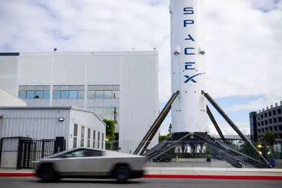
- DIGITIMES SpaceX併Tesla造3.5兆美元AI帝國 股東溢價與監管成關鍵
- TechOrange 科技報橘 【科技早餐】AI 算力大戰進入資金淘汰賽？OpenAI 下修估值目標、SpaceX 稱融資 400 億美元
2 家媒體報導nvidiagtcelon
輝達預訂產能至 2028 滿載，欣興簡山傑揭密：AI 高階載板不能再單打獨鬥
欣興電子 22 日早盤股價一度大漲 3% 多，原因是 NVIDIA 執行長黃仁勳於德國柏林舉行的 GTC Be […]
- DIGITIMES 黃仁勳與Elon Musk異口同聲 GPU不再快速貶值、舊款更值錢
- 科技新報 TechNews 輝達預訂產能至 2028 滿載，欣興簡山傑揭密：AI 高階載板不能再單打獨鬥
2 家媒體報導workexpandingworld
ChatGPT’s expanding world of work
Explore OpenAI Signals data on 165 work activities across nearly 100 countries, revealing how people use ChatGPT for work and how usage changes over time.
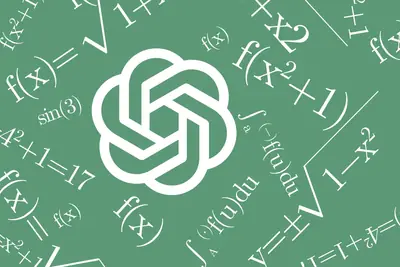
2 家媒體報導datadatacenterhighway
Anthropic is burning gas to feed the AI boom
As it prepares to go public, Anthropic's S-1 filing makes generative AI's methane dependency glaringly obvious. "Competition for access to electrical supply and data center locations with adequate power availability is intense." In documents filed with the US Securities and Excha
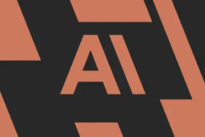
2 家媒體報導agentsagentrealreal
Meet the AI Agents Trying to Be Real-Life Journalists
Jayden, Sam, and Zack are eagerly pitching editors on reported stories and investigative features. The catch? They're all AI agents.
amdnvidia
超微、NVIDIA鎖定載板產能 喊4倍擴產仍遇多重資源限制
超微（AMD）、NVIDIA先後公開注資支持供應鏈擴產，雙雙將載板、封裝與測試列為布局重點，顯示隨著AI需求朝向多元化發展，晶片大廠之間的競爭也從效能與架構設計，延...
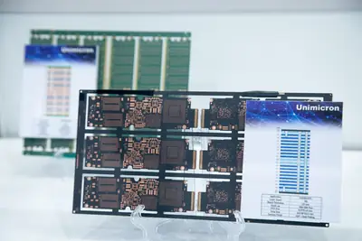
- DIGITIMES 超微、NVIDIA鎖定載板產能 喊4倍擴產仍遇多重資源限制
半導體設備交期非最大難題 供應鏈揭AI晶片擴展瓶頸「接力」
人工智慧（AI）帶動晶片需求一路上修，然半導體設備供不應求的消息，成為近期市場愈漸擔憂的情況之一，尤其美國市場更是如此。主因為部分設備大廠已直言，2027、2028年...
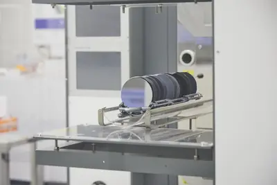
- DIGITIMES 半導體設備交期非最大難題 供應鏈揭AI晶片擴展瓶頸「接力」
hbmdatacenter
車用記憶體淪AI排擠犧牲品？大廠布局直購防「斷鏈」
人工智慧（AI）資料中心投資擴張，正將記憶體供需壓力傳導至汽車產業。隨著半導體業者優先投入高頻寬記憶體（HBM）與伺服器產品，車用記憶體面臨價格上漲與供應吃緊，...
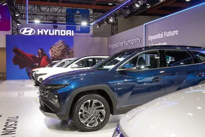
- DIGITIMES 車用記憶體淪AI排擠犧牲品？大廠布局直購防「斷鏈」
dsxpodmicrosoft
貨櫃式資料中心掀新戰局 NVIDIA DSX POD拚AI算力、微軟與AWS挺進軍事前線
NVIDIA於2026年10月21日發表模組化AI資料中心參考設計DSX POD，宣稱能將傳統資料中心長達6個月的部署時間，縮短至最快14天。事實上，微軟（Microsoft）早在202...
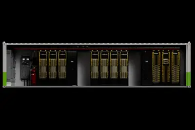
googleintelaws
AWS、Google聯手挑戰CUDA 超微與英特爾整合AI軟體降低晶片轉換門檻
AWS日前推出開源工具TorchNeuron，讓開發者無須重寫程式，即可將PyTorch人工智慧（AI）應用移植至自研Trainium晶片；Google也跟進開放TorchTPU，協助應用轉向...
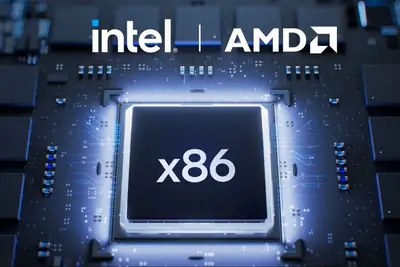
- DIGITIMES AWS、Google聯手挑戰CUDA 超微與英特爾整合AI軟體降低晶片轉換門檻
nextdcdatacenter
澳洲資料中心供電延誤 NextDC下修財測、縮減資本支出
近日市場對人工智慧（AI）資料中心開發的態度再次趨於保守。資料中心業者上市計劃撤銷、暫停，或重新評估的事件頻傳。世界各地對資料中心的反彈聲浪，也成為投資者卻步...
- DIGITIMES 澳洲資料中心供電延誤 NextDC下修財測、縮減資本支出
skymizerhbmflow
有冰箱插座即可運行 Skymizer合作神盾開發12、6奈米加速器晶片
台灣新創業者Skymizer公開表示，將與神盾集團合作新一代AI推論晶片Flow（T12），採用台積電12奈米製程搭配LPDDR5記憶體，並強調只需要3張PCIe卡和750 W的功耗...
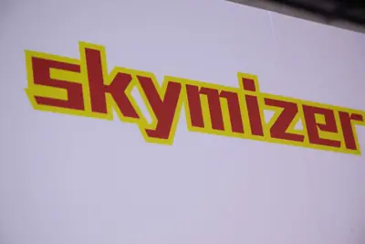
- DIGITIMES 有冰箱插座即可運行 Skymizer合作神盾開發12、6奈米加速器晶片
googlegeminiceo
Google算力荒迫使雲端讓路 CEO坦言前沿AI優先、2027年產能難搶
Google近日發表旗艦AI模型Gemini 4 Argon，該模型在推出後72小時內消耗高達25兆個Token，為上一代Gemini 3.0同期的3倍，並創下Google歷史紀錄。Google執行長Sun...
- DIGITIMES Google算力荒迫使雲端讓路 CEO坦言前沿AI優先、2027年產能難搶
hbmvdc800
54V遇容量瓶頸、800VDC接棒 功率半導體缺貨鏈恐一路傳導
AI資料中心的建置規模持續擴大，帶動的已不只是GPU、記憶體與先進封裝，畢竟GPU叢集功耗快速攀升，資料中心除了需要更多晶片，也需要效率更高「供電架構」，甚至外部...
- DIGITIMES 54V遇容量瓶頸、800VDC接棒 功率半導體缺貨鏈恐一路傳導
ipadminia20
5499 元起：苹果发布 iPad mini 8 平板，8.5 寸 60Hz OLED 屏、A20 Pro 芯片、支持 IP67 防尘防水
IT之家 10 月 26 日闪讯速报，苹果发布 iPad mini 8 平板电脑。这款产品搭载 8.5 英寸 OLED 屏幕，比上一代薄了 14%，采用 A20 Pro 芯片，10 月 29 日凌晨 1 点 10 分接受预购，11 月 6 日发售， 定价 5,499 元起 。 IT之家附 iPad mini 8 各版本定价如下： 128GB：Wi-Fi 版 5,499 元，Wi-Fi+ 蜂窝版 6,799 元 256GB：Wi-Fi 版 6,299 元，Wi-Fi+ 蜂窝版 7,599 元 512GB：Wi-Fi 版本 7,999 元，Wi-Fi+ 蜂窝
OpenAI 宣布斩获三项重大科学突破，涉及数学猜想、计算机算法及千禧年难题
IT之家 10 月 27 日消息，OpenAI 宣布，其 AI 模型在数学、计算机科学和物理学领域取得三项重大突破，展现出 AI 独立发现并证明复杂科学理论的能力，而不只是回答问题或辅助研究。 在数学领域，AI 证明了适用于所有维度的局部光滑猜想，并由此解决 局部光滑猜想与挂谷猜想 。 在计算机科学领域，AI 推翻了 长期被广泛接受的指数时间假设 ，意味着未来可能找到速度更快的算法。 在物理学领域，AI 提出 量子色动力学及杨–米尔斯理论的严格数学存在性证明 ，涉及世界七大千禧年数学难题之一。 OpenAI 表示，数学和计算机科学成果已通过 Lean 数
opensource
Anthropic 招股书披露：曾因安全顾虑暂停旗舰 AI 模型训练一个多月
IT之家 10 月 27 日消息，Anthropic 在当地时间周一公布的 IPO 招股文件中披露，出于安全方面的顾虑，该公司曾暂停下一代旗舰 AI 模型的训练长达一个多月；另外还有四个 AI 智能体在测试期间突破限制，接入了真实的外部计算机系统。 IT之家注意到，这家 Claude 开发企业在文件的风险提示章节中表示，其推迟了一款全新前沿基础模型的预训练工作，目的是强化防护机制，防止模型权重与知识产权被盗。 这份披露内容展现出，研发能力越来越强的 AI 模型会伴随各类安全难题，部分从业者已经发出警示，这类技术未来有可能脱离人类管控。竞争对手 OpenA
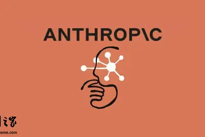
terra5.5gpt-6.1
OpenAI 低成本新模型 GPT-6.1 Terra 深夜炸场：每项任务成本仅 Claude Opus 5.5 九分之一，更快更准确
IT之家 10 月 27 日消息，OpenAI 今天（27 日）凌晨宣布推出新模型 GPT-6.1 Terra，主打以更低成本完成复杂的电脑操作任务，尤其擅长需要视觉推理和操作桌面软件的工作。与 GPT-5.6 Terra 相比，新模型在事实准确性和编程能力方面也有大幅提升。 Terra 主要面向希望降低自动化成本的企业，可用于处理发票、解读技术图纸等工作。OpenAI 称，面对难度较高的专业任务，Terra 也能以远低于高价模型的成本完成。 在考察复杂专业工作的 Agents’ Last Exam 基准测试中，Terra 的成绩明显提高。测试项目包括根
robotchatgptnvidia
機器人的「ChatGPT 時刻」還沒到，輝達前高層：實體 AI 正處於打基礎的「樂高時代」
針對外界殷切期盼機器人領域能早日迎來專屬的「ChatGPT 時刻」，輝達（Nvidia）前機器人產品行銷主管、 […]
- 科技新報 TechNews 機器人的「ChatGPT 時刻」還沒到，輝達前高層：實體 AI 正處於打基礎的「樂高時代」
apollo630400
630 亿美元！华尔街银行与黑石为 Anthropic 采购博通 AI 芯片提供融资
IT之家 10 月 27 日消息，据路透社报道，美国银行（Bank of America）、黑石（Blackstone）、花旗（Citi）和摩根士丹利（Morgan Stanley）将提供 630 亿美元 （IT之家注：现汇率约合 4,206.79 亿元人民币） 融资，用于为 Anthropic 采购博通（Broadcom）的人工智能芯片与网络设备，这是和人工智能算力建设相关的规模最大的一笔债务交易之一。 人工智能需求持续走高，各大科技企业争相储备算力，支撑复杂度不断提升的业务负载，由此催生了对计算基础设施的巨额投入。 相关企业当地时间周一表示，这笔交易

anthropiccompute
人类史上最大 IPO！Anthropic 提交纳斯达克 IPO 申请，股票代码为“ANT”
IT之家 10 月 26 日消息，10 月 26 日，人工智能初创公司 Anthropic 向美国证券交易委员会提交 S-1 注册文件，计划首次公开发行 A 类普通股，并申请在纳斯达克以“ANT”为股票代码上市。本次发行规模、定价区间与上市日期暂未公布。 据《华尔街日报》报道，Anthropic 计划于 11 月 16 日当周进行 IPO。Anthropic 目标估值有望高达 2 万亿美元， 若成功落地，将成为有史以来规模最大的 IPO 。 招股书披露，公司业绩呈现高速增长态势：2025 年营收 45.85 亿美元 （IT之家注：现汇率约合 306.16

微软向约 6 万名员工推出自愿离职买断方案，适配 AI 时代人员结构调整
IT之家 10 月 27 日消息，微软于当地时间周一向科技媒体 TechCrunch 证实，公司正向约 6 万名员工提供自愿离职买断方案。此举是微软为削减成本、适配人工智能时代调整人员结构的最新举措。 微软首席人力官埃米 · 科尔曼（Amy Coleman）向员工发送了关于本次买断方案的通知，IT之家注意到，这份通知也同步发布在微软官网。 通知显示，美国、加拿大、印度和英国部分团队中副总裁级别及以下的员工符合申请资格。据彭博社报道，参与本次买断计划的部门包括 Xbox、Windows、Copilot 以及财务部门。数据中心、销售和市场营销等岗位的部分员工
greptilegpt-6astra
Greptile takes bug detection beyond code review with GPT-6 Astra
How Greptile uses GPT-6 Astra to test user workflows, Daybreak to strengthen security, and Codex to reduce rework.
urlhttpscomments
GPT-6.1 Terra
Article URL: https://openai.com/index/introducing-gpt-6-1-terra/ Comments URL: https://news.ycombinator.com/item?id=50248124 Points: 470 # Comments: 293
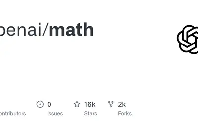
- Hacker News (100+) The Exponential Time Hypothesis Is False [pdf]
- Hacker News (100+) GPT-6.1 Terra
- Hacker News (100+) Anthropic S-1
techjasonkoebler
Quoting Jason Koebler
Because big tech platforms essentially do not have customer support and make it impossible for their users to contact a human, many people experiencing run-of-the-mill tech problems have turned to ChatGPT. And, increasingly, ChatGPT is telling people that have normal tech support
- Simon Willison Quoting Jason Koebler
iceemployeesrobot
ICE plan to buy robot dogs spurs protest from hundreds of Boston Dynamics employees
US robotics company stands by ICE deal as more than 300 employees warn of risk.
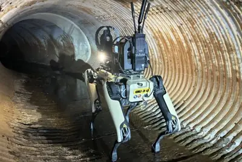
ieeelibraryxplore
IEEE Xplore Digital Library Adds AI Assistant
IEEE recently released the IEEE Xplore AI Research Suite , built on the full text of millions of peer-reviewed publications in the IEEE Xplore Digital Library . The library offers full-text access to IEEE standards , journals, magazines, conference proceedings, and more. Research
- IEEE Spectrum AI IEEE Xplore Digital Library Adds AI Assistant
realpleasestand
Will the real Anthropic please stand up
This story originally appeared in The Algorithm, our weekly newsletter on AI. To get stories like this in your inbox first, sign up here. After weeks of frenzied speculation, Anthropic has filed its IPO prospectus. The 335-page document (100 pages or so are focused on risks) lays
- MIT Technology Review AI Will the real Anthropic please stand up
entireplatformcompetitor
Github competitor Entire is live now – how the agent-first platform works
Now that agents are writing so much code, Entire is trying to reinvent the coding platform itself.
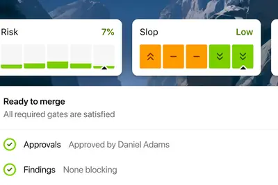
financinglocksdeal
SpaceX locks in $40B GPU financing deal with Apollo
The financing gives SpaceX another way to fund its rapidly expanding AI ambitions without relying solely on traditional debt markets.
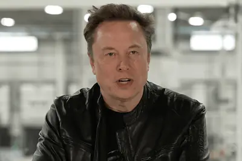
- TechCrunch AI SpaceX locks in $40B GPU financing deal with Apollo
applealreadyhere
iPhone Duo screens are already cracking: What buyers need to know
A handful of first-hand reports show similar damage, suggesting a bad batch of hinges. Here’s what to do if your Duo screen fails.
newestquestmapping
Our newest AI Quest: Mapping the human brain
An illustration of a planet rotating to show various cartoon figures waving. At the top is the text "AI Quests"
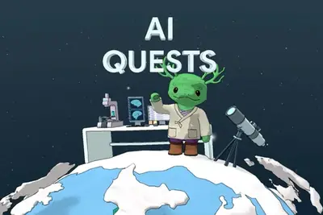
microsoftemployeesbuyouts
Microsoft offers buyouts to 60,000 employees
Microsoft is offering voluntary buyouts to up to 60,000 employees across the US, UK, Canada, and India. In a message to employees, Microsoft chief people officer Amy Coleman writes that this gives staff members "the opportunity to leave Microsoft with financial support and career
- The Verge AI Microsoft offers buyouts to 60,000 employees
revealshoodprospectus
Anthropic’s IPO Prospectus Reveals What’s Under the Hood
Anthropic on Monday filed documents ahead of a blockbuster IPO that offers insight into the company’s financials, risk factors, and views on the future of AI.
officiallyfilesdebut
Anthropic officially files for its public debut
Anthropic has officially filed for an IPO, revealing soaring revenue, mounting losses, major enterprise adoption, and an unusual governance structure designed to preserve founder control and its AI safety mission.

- TechCrunch AI Anthropic officially files for its public debut
autonomyteslagave
Tesla gave up the EV crown. Now it wants to win the autonomy race.
Tesla hopes autonomy subscriptions can deliver the margins car sales cannot.
buildworkingacademic
Working with academic communities to build scientific understanding
OpenAI shares model results on the Kakeya conjecture, Exponential Time Hypothesis, and quantum chromodynamics—and how researchers can verify and build on them.
2026fundingchip
长川科技 2026 年前三季度归母净利润 17.65 亿元，同比增长 103.92%
IT之家 10 月 26 日消息，长川科技今日发布 2026 年前三季度（2026 年 1 月～2026 年 9 月）报告： 营业总收入 ：59.42 亿元，同比增长 57.25% 归母净利润 ：17.65 亿元，同比增长 103.92% 扣非净利润 ：17.17 亿元，同比增长 117.71% 经营现金流 ：10.39 亿元，同比增长 1114.71% 加权平均净资产收益率 ：28.14% 基本每股收益 ：2.778 元，同比增长 101.46% 稀释每股收益 ：2.7317 元，同比增长 101.77% AI 解读 本期公司业绩落在此前披露的业绩预告
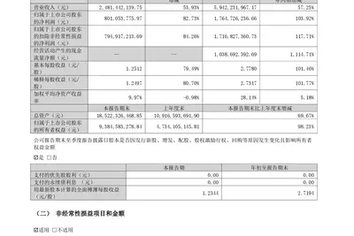